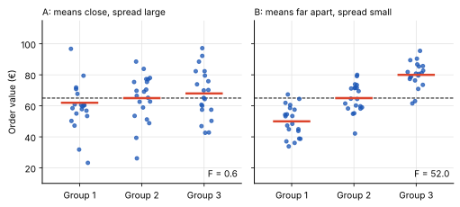
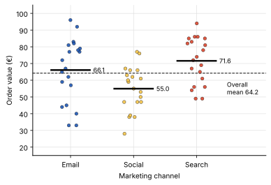
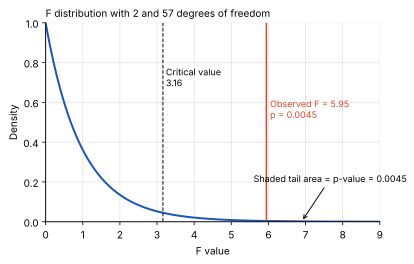
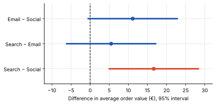
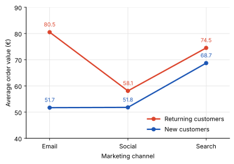

Inference & experiments
ANOVA: Comparing Averages Across Three or More Groups
Do email, social media and search campaigns generate different average order values? And if they do, are these differences meaningful or simply the result of random variation?
Comparing two groups is relatively straightforward with a t-test. But when we want to compare three or more groups, running multiple t-tests can increase the risk of false positives.
This is where ANOVA (Analysis of Variance) comes in. It tests whether the differences between group means are large relative to the variation within each group. Instead of testing each pair separately, ANOVA evaluates whether there is sufficient statistical evidence that not all group means are equal.
Why Not Run Several t-Tests?
Imagine we want to compare the average order value of three marketing channels: email, social media and search.
We could run three separate t-tests: email vs. social, email vs. search, and social vs. search. However, every additional test increases the overall risk of a false positive — concluding that a difference exists when it is actually due to random variation.
With three independent tests at a 5% significance level, the probability of at least one false positive would be approximately 14.3% if all null hypotheses were true. As the number of comparisons increases, this risk can grow further.
ANOVA (Analysis of Variance) addresses this by testing the overall question first: is there sufficient statistical evidence that not all group means are equal?
One-Way vs. Two-Way ANOVA
One-way ANOVA examines the relationship between one categorical independent variable and one continuous dependent variable.
For example, we could investigate whether average order value differs across email, social media and search campaigns. The hypotheses are:
- H0: The population mean order values are equal across all three channels.
- H1: Not all population mean order values are equal.
A significant result indicates that at least one population mean differs, but it does not tell us which channels differ. Post-hoc tests can investigate individual pairs.
Two-way ANOVA examines two categorical independent variables simultaneously and their relationship with one continuous dependent variable.
For example, we could investigate whether average order value differs by marketing channel and customer type (new vs. returning). A two-way ANOVA evaluates three effects, each with its own pair of hypotheses.
1. Main effect of marketing channel
- H0: The population mean order values are equal across all marketing channels.
- H1: Not all population mean order values are equal across marketing channels.
2. Main effect of customer type
- H0: New and returning customers have the same population mean order value.
- H1: New and returning customers have different population mean order values.
3. Interaction effect
- H0: There is no interaction between marketing channel and customer type.
- H1: There is an interaction between marketing channel and customer type.
An interaction occurs when the effect of one factor depends on the level of another factor. For example, email marketing might generate higher average order values among returning customers, while search performs better among new customers.
The interaction test evaluates whether the differences between marketing channels change depending on customer type.
The Core Idea: Variation Between Groups vs. Variation Within Groups
ANOVA does not compare the averages directly. It compares two kinds of variation:
- Variation between groups. How far the group averages are from the overall average. If the channels really differ, their averages spread out.
- Variation within groups. How much individual orders differ inside the same channel. Even within one channel, some customers spend €30 and others €90. This is the background noise.

The F statistic puts the two kinds of variation into one ratio:
F = variation between groupsvariation within groupsIf all groups share the same true average, F is close to 1. The larger F gets, the harder it is to explain the gaps by chance.
One-Way ANOVA, Step by Step
We compare 60 orders from three marketing channels, 20 per channel. The figures are illustrative and based on simulated data, not a real retailer.
| Channel | Average order value | Standard deviation |
|---|---|---|
| €66.10 | €19.01 | |
| Social | €54.95 | €13.15 |
| Search | €71.60 | €13.86 |

Step 1: Define the null and alternative hypotheses
- H0 (null hypothesis): The population mean order value is equal across all three marketing channels.
H0: μEmail = μSocial = μSearch
- H1 (alternative hypothesis): The means of each group are not all equal. Remember, even if only one mean differs, that is sufficient evidence to reject the null hypothesis.
H1: NOT (μEmail = μSocial = μSearch)
We use a significance level of α = 0.05, meaning we accept a 5% Type I error rate for this test.
Step 2: Calculate the F-statistic
The overall mean of all 60 orders is €64.22. ANOVA uses this overall mean as a reference point to measure two types of variation: between-group variation and within-group variation.
1. Between-group variation (SSB)
How far are the group means from the overall mean?
For each marketing channel, we calculate the squared difference between its mean order value and the overall mean. We multiply this difference by the number of orders in that group and add the results.
SSB = Σi=1k ni(x̄i − x̄)²
Here, ni is the number of orders in group i, x̄i is the group mean, and x̄ is the overall mean.
In our example:
SSB = 2,878.6
A larger SSB indicates that the group means are more spread out around the overall mean.
2. Within-group variation (SSW)
How much do individual order values vary within their own marketing channel?
For each channel, we calculate the squared difference between every order value and its channel’s mean. We then add all these squared differences across the three groups.
SSW = Σi=1k Σj=1ni (xij − x̄i)²
In our example:
SSW = 13,799.6
A larger SSW indicates greater variation among individual orders within the groups.
Why do we divide by degrees of freedom?
SSB and SSW cannot be compared directly because they represent variation across different numbers of independent pieces of information. We divide each sum of squares by its corresponding degrees of freedom to obtain a mean square.
For a one-way ANOVA with three groups and 60 observations:
- Between-group degrees of freedom: dfB = k − 1 = 3 − 1 = 2
- Within-group degrees of freedom: dfW = N − k = 60 − 3 = 57
The mean squares are:
MSB = SSBdfB = 2,878.62 = 1,439.3
MSW = SSWdfW = 13,799.657 ≈ 242.10
Calculate the F-statistic
The F-statistic is the ratio of the between-group mean square to the within-group mean square.
F = MSBMSW
Using our example:
F = 1,439.3242.10 ≈ 5.95
A larger F-statistic indicates that the variation between group means is large relative to the variation within the groups. We use the F-distribution, together with the degrees of freedom, to calculate the p-value and determine whether the observed differences are statistically significant.
These results are usually summarized in an ANOVA table:
| Source | Sum of squares | df | Mean square |
|---|---|---|---|
| Between channels | 2,878.6 | 2 | 1,439.3 |
| Within channels | 13,799.6 | 57 | 242.1 |
| Total | 16,678.2 | 59 | — |
Step 3: Find the p-value
If H0 is true, F follows an F distribution. Its shape depends on two degrees of freedom: 2 for the numerator and 57 for the denominator.
At a significance level of 5%, the critical value for 2 and 57 degrees of freedom is 3.16. Our statistic of 5.95 is above it.

The p-value is approximately 0.0045. It was determined using Python. If all three channels really had the same average, an F value this large or larger would appear in about 4 or 5 of 1,000 samples.
Step 4: Make a conclusion
The p-value of about 0.0045 is below α = 0.05, so we reject H0. The data give evidence that at least one channel has a different average order value.
How large is the effect? The between-group share of the total variation is 2,878.6 ÷ 16,678.2 = 0.17 (called η², “eta squared”). The channel explains about 17% of the differences in order values. The other 83% is variation within channels.
What a Significant Result Does Not Tell You
- Which groups differ. ANOVA says that the averages are not all equal. It does not say whether email differs from social, or only search from social.
- Why they differ. The channels may reach different audiences. A higher average in search does not prove that search makes people spend more.
- That the difference matters. With thousands of orders, even a tiny gap becomes significant. Look at η² and the size of the differences in euros, not only at the p-value.
Which Groups Differ? Post-Hoc Tests
To find out which channels differ, we compare the pairs after ANOVA with a post-hoc test. A common choice is Tukey’s HSD. It compares every pair, but adjusts the p-values and intervals for the fact that we make three comparisons. This keeps the overall false-alarm risk at 5%, which is the problem from the start of this post.
| Comparison | Difference in average | Adjusted p-value |
|---|---|---|
| Email − Social | €11.15 | 0.069 |
| Search − Email | €5.50 | 0.507 |
| Search − Social | €16.65 | 0.004 |

Why the adjustment matters: an ordinary t-test of email against social would give p ≈ 0.037 and look significant. After adjusting for three comparisons, the p-value is 0.069. Without the adjustment, we would have found a difference that the data do not support.
Assumptions and When ANOVA Breaks
- Independent observations. Each order should come from a different customer. If the same customer appears many times, the orders are not independent.
- Roughly normal residuals. The differences between orders and their channel average should be roughly bell-shaped. With about 20 or more observations per group, ANOVA tolerates moderate deviations.
- Similar spread in all groups. A common rule of thumb is that the largest standard deviation should be less than twice the smallest. Here it is €19.01 against €13.15, about 1.4 times. Levene’s test agrees (p = 0.18).
If the assumptions fail, there are alternatives. Welch’s ANOVA handles groups with unequal spread. The Kruskal–Wallis test compares groups without assuming a normal shape, which helps with strongly skewed data or extreme outliers.
Two-Way ANOVA: Adding a Second Factor
So far the customer type was ignored. Of our 60 orders, 30 came from new and 30 from returning customers, evenly spread over the channels (10 in each combination). Two-way ANOVA tests the channel, the customer type and their interaction at once.
| Average order value | New customers | Returning customers |
|---|---|---|
| €51.70 | €80.50 | |
| Social | €51.80 | €58.10 |
| Search | €68.70 | €74.50 |

| Effect | F | p-value |
|---|---|---|
| Channel | 8.37 | 0.0007 |
| Customer type | 16.21 | 0.0002 |
| Channel × customer type | 5.02 | 0.0100 |
- Channel and customer type both matter. Returning customers spend about €13.60 more on average than new customers (€71.03 vs. €57.40).
- The interaction is significant. Email lifts the order value of returning customers by €28.80 compared with new customers, social by only €6.30 and search by €5.80.
- Read the interaction first. If it is significant, “which channel is best?” has no single answer. For new customers search is best (€68.70). For returning customers email is best (€80.50).
The channel effect is stronger here (F = 8.37) than in the one-way test (F = 5.95). Customer type explains part of the variation that was left over as noise before, which makes the channel differences easier to see.
Coding
You do not have to calculate the F statistic by hand. The f_oneway() function from scipy.stats runs the one-way test, and tukey_hsd() runs the post-hoc comparisons. The data frame orders has one row per order, with the columns channel, customer and value.
import pandas as pd
from scipy import stats
orders = pd.read_csv("orders.csv") # columns: channel, customer, value
groups = [g["value"] for _, g in orders.groupby("channel")]
result = stats.f_oneway(*groups)
print(f"F = {result.statistic:.2f}, p = {result.pvalue:.4f}")
print(stats.tukey_hsd(*groups))
print(stats.levene(*groups))
# F = 5.95, p = 0.0045
# Levene test for equal spread: p = 0.18The groups are sorted alphabetically, so in the Tukey output 0 = Email, 1 = Search and 2 = Social. The result matches our calculation: F = 5.95 and p = 0.0045. Only the pair 1 − 2 (Search − Social) has an adjusted p-value below 0.05.
For two-way ANOVA we use the statsmodels package. The formula channel * customer includes both main effects and their interaction.
import statsmodels.api as sm
from statsmodels.formula.api import ols
model = ols("value ~ C(channel) * C(customer)", data=orders).fit()
print(sm.stats.anova_lm(model, typ=2).round(4)) sum_sq df F PR(>F)
C(channel) 2878.6333 2.0 8.3702 0.0007
C(customer) 2788.0167 1.0 16.2134 0.0002
C(channel):C(customer) 1725.8333 2.0 5.0182 0.0100
Residual 9285.7000 54.0 NaN NaNHow to explain it to stakeholders
“In our last 60 orders, the three marketing channels did not bring in orders of the same value. Search orders averaged €71.60, email orders €66.10 and social orders €54.95. The ANOVA test indicates that gaps this large are unlikely to be explained by random variation alone. The one difference we can clearly confirm is between search and social, about €17.”
“The test does not tell us why. It also shows that customer type matters: email works very well for returning customers (€80.50) but not for new ones (€51.70). The business question is whether we should use email to keep existing customers buying and search to win new ones.”
Key takeaway
ANOVA tests whether the averages of three or more groups are equal, by comparing the variation between groups with the variation within groups. A large F ratio and a small p-value mean that at least one group differs.
- Post-hoc tests such as Tukey’s HSD show which groups differ, without inflating the false-alarm risk.
- Two-way ANOVA adds a second factor and tests the interaction between the two.
A significant result does not show why groups differ or how much the difference matters. Check the size of the effect and the assumptions before drawing conclusions.
Related posts
- Hypothesis Testing The logic of H0, p-values and significance levels behind every test.
- T-Test vs. Z-Test The tests for comparing two averages, where ANOVA handles three or more.
- Chi-Squared Test The test to use when the outcome is a category instead of a number.
- A/B Testing How to design an experiment whose results you can test.